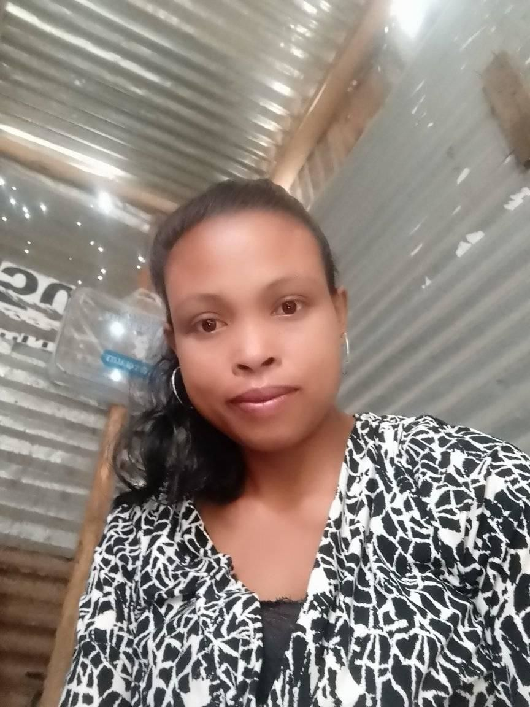
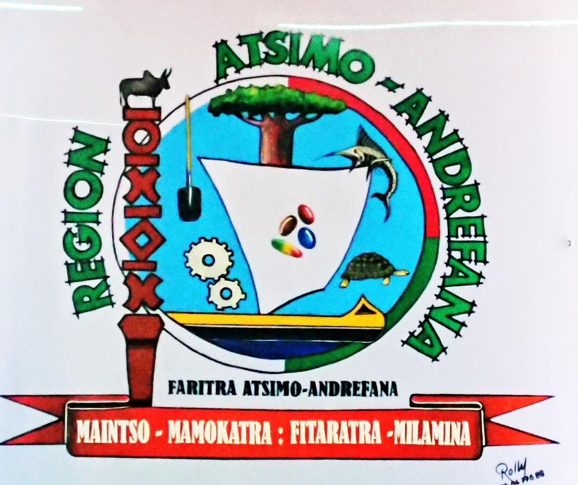
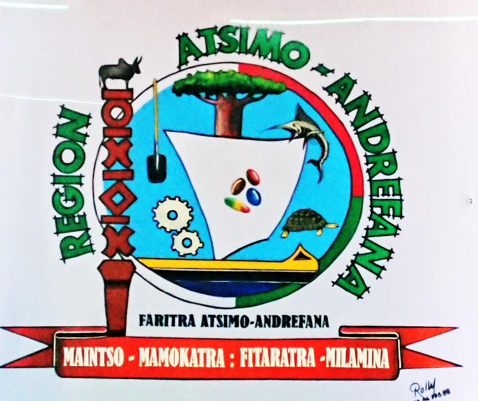

Nos Promoteurs
RALANDISON
ANDRIAMBOLOLONIAINA Fetra
Production de fois gras , magret , cuisse et carcasse de canard

PROFAR SARL
A.Jean Cher
Mise en place d'une unité de fabrication de farine de manioc de haute qualité à Mitsinjo Betanimena , Commune urbaine de Tuléar , dans la Region Sud-Oeust.

BELL'MIARY
BELLA R.R. Mosa
Mise en place d'une unité de transformation de banane à Atsimo Andrefana
Moringa Boost Organic
BEMANANJARA Hansia
MORINGA DU SUD : Transformation de feuilles de Moringa en produits finis
ANDRIAMAHERY
EOLISOA T. C. Mondesir
Unité de production d'huile de ricin dans la région Atsimo Andrefana
A'LEAF
FANOMEZANTSOA Tojomalala
Production et transformation de stevia
402 FARMING
FINDRAMA M. Luc Elson
Création d'une ferme de verger à Antanilehibe CR Ankililoaka Toliara II

SOAHARY
FITAHIA Miarisoa Edda
Valorisation du romba (Ocimum basillicum) pour une production d'huile essentielle dans la région Sud-Ouest
MILKO
GISINEVA Karaovelo Angela
Mise en place d'une unité d'extraction d'huile et de production de jus de baobab
RICINUS HARENA COLOMB
HARESOA Ampiaze
Création d'un atelier de production d'huile de ricin (kinagna)
GASY NOUILLE
HARINTSOA Atonio Gaston
Mise en place d'une unité de transformation de manioc en poudre pour obtenir de la farine et produire de la nouille
LHJ
LALASON Heriniaina José
Extension du site d'exploitation des mils,des pois du cap et des lentilles dans la cr Antanimieva
JARDIN DELICE
RAHARIMAMPIONONA Eva J.
Transformation de tomate
Jod Position
RAJAONARIVELO F. Justoberthe
Aquaculture intégrée poisson-canard dans le village de Mampanarivo Firaisantsoa dans la commune rural de Tanandava Station/Région Atsimo Andrefana
Job Position
RAJELIZAFY Charline Marie
Création d'une ferme piscicole dans la commune Bezaha

ZOAHARY BAOBAB
RAKOTONDRAMIARANA Voahary L.
Transformation de fruits de baobab en poudre,en huile végétale,et en savon de toilette/Shampoing solide
MIAINA TOLIARA SARL
RANDRIANARIVONY Hajaseheno S.
Extension de ferme d'élevage de vache laitier de race pie rouge norvegien (PRN) dans la commune rural Miary

FERME SOALAIT SARL
RASOARIMALALA N. Stela M.
Extension de ferme d'élevage de vache laitier de race pie rouge norvegien (PRN) dans la commune rural Miary

SARIAKA
RASOLOMAMPIONONA Voahangy
Extraction et transformation de fibre de bananier
Job Position
RASOLOVOAHANGY Nathalie
Transformation de dattes et plantation de palmiers dattiers

SAVONY MAMIRATRA
RATEFY Ando Hanitriniaina
Production de savon barre à partir d'huile essentielle
Job Position
RAVAOARIMANANA L. Larissa
Mise en place d'une unité de transformation de patate douce en chips
Job Position
RAZAKANDRAINY Andriamanjato
Mise en place d'une unité de production fourrage à Toliara
SOATALENTA SARL
RAZANAKOTO Anny Flora
Elevage caprin pour saucisse chipolata 100% chèvre
RENALA NY AHY
RENALA S. Estelle Suzah
Transformation de mais , des manioc et des patates douces en farine et produits dérivés
D&S AGROALIMENTAIRE DE MADAGASCAR SARL
SISMONDI Delpech R. C.
Transformation de fruit de dattier de tuléar en datte en barquette,vinaigre de datte dans le fokontany Ambohitsabo,région Atsimo Andrefana , District Toliara I

RJ SOAVINA
SOAVINJANAHARY R.Rijandrainy
Mise en place d'une unité de transformation de banane dans la commune rurale d'Ankililoaka/District Toliara I
Job Position
VALITERA T. Fabrico
TELECOM : Projet plantation de sisal "agave sisalana" et production de fibres

AQUAFERME DU SUD
RAZAFINDRAKOTO A. Lalaina E.
Elevage de tilapia monosexe male

OMEGA 3
TSIMBAZAFY J. Pierro
Mise en place d'une unité de transformation en charcuterie et farine de poisson

 
